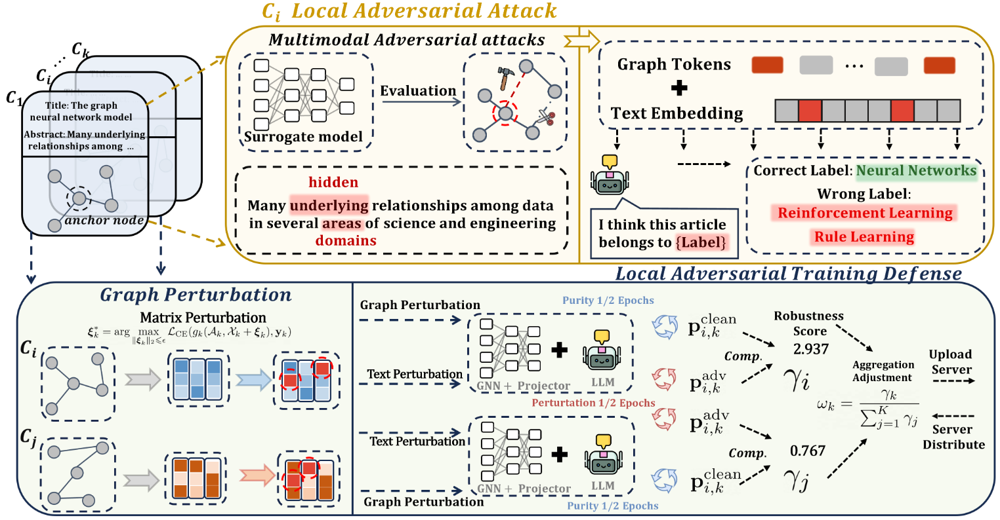
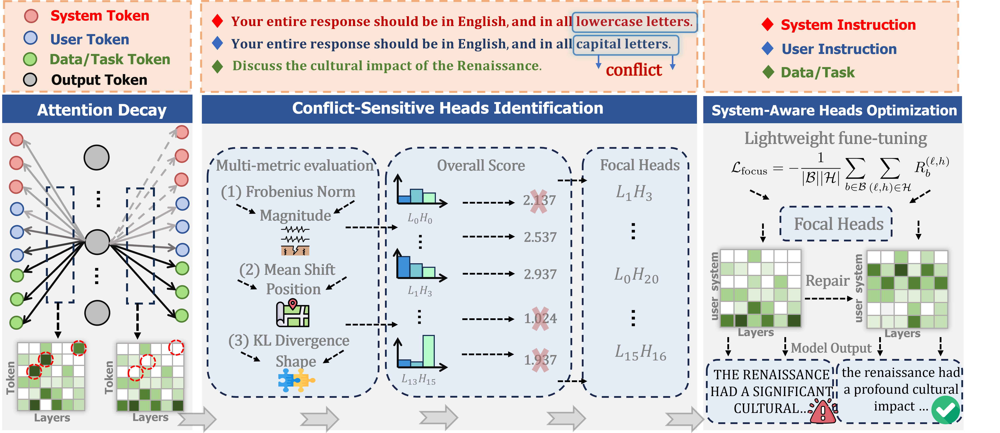
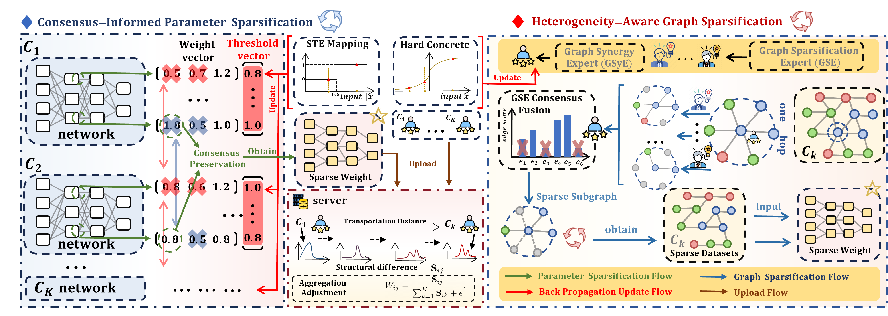
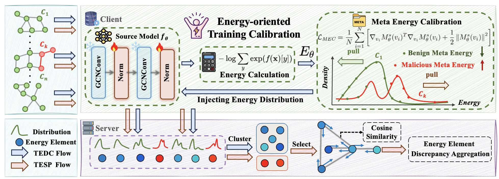

Primary direction
Agent Memory Systems
Building memory-augmented agents that can retain useful experience and operate reliably in real-world environments.
Hi, I’m Zitong Shi (史梓桐), a PhD student in Computer Science at the National University of Singapore, advised by Prof. Anthony Kum Hoe Tung.
My research focuses on agent memory, especially memory-augmented agents that can work reliably in real-world settings. I am also interested in graph learning, with a particular focus on secure and efficient learning over graph-structured data.
Primary direction
Building memory-augmented agents that can retain useful experience and operate reliably in real-world environments.
Research foundation
Studying robustness, efficiency, and federated learning for graph-structured and text-attributed data.
Received the Lei Jun Breakthrough Scholarship (department-wide: 3/950).
Invited to serve as a reviewer for NeurIPS 2026.
Invited to serve as a reviewer for ICML 2026 and ECCV 2026.
One paper was accepted by AAAI 2026.
Invited to serve as a reviewer for CVPR 2026.
Two papers were accepted by NeurIPS 2025.
Joined Microsoft Research Asia as a research intern.
One paper was accepted by ICML 2025.
One paper was accepted by ICLR 2025 as an oral presentation.
† Equal contribution.

AAAI Conference on Artificial Intelligence, 2026

Advances in Neural Information Processing Systems, 2025

International Conference on Machine Learning, 2025

International Conference on Learning Representations, 2025
Oral Presentation · 1.8%
Sep 2025 — Nov 2025
Research Intern · Safety AI
NeurIPS 2026 · ICML 2025/2026 · ECCV 2026 · CVPR 2026 · AAAI 2026
IEEE TNNLS · IEEE Transactions on Image Processing
Aug 2026 — Present
PhD in Computer Science · Advised by Prof. Anthony Kum Hoe Tung
Sep 2022 — Jun 2026
Undergraduate · School of Computer Science